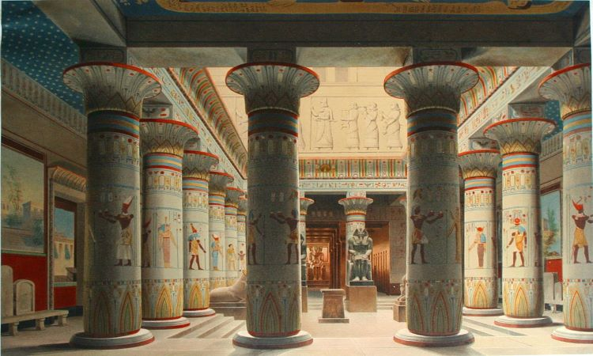
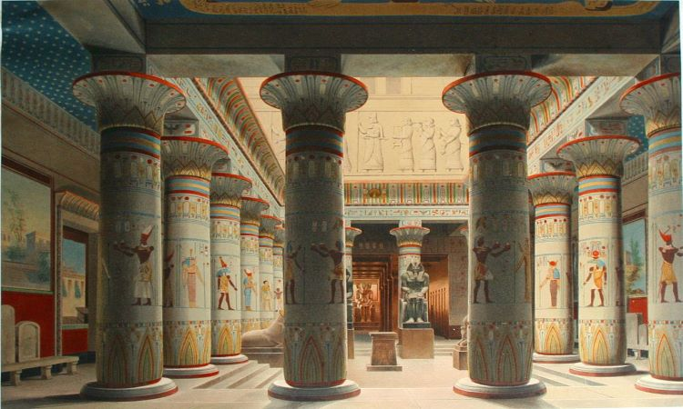

Le musée égyptien du Caire est l’un des plus grands musées entièrement consacré à l’Antiquité égyptienne. Il a reçu plus de cent millions de visiteurs au xxe siècle. Le premier conservateur de ce musée fut Auguste Mariette le 1er juin 1858. Plus de 160 000 objets sont exposés, mais la pièce maîtresse du musée est bien sûr le trésor de Toutânkhamon. Soixante mille objets de toutes sortes, statues, statuettes, bas-reliefs, peintures murales, stèles, fausses portes, vases, armes, outils, sarcophages, momies, etc., s'entassent dans les caves, les débarras et les combles du musée égyptien. Mais c'est également dans ces réserves qu'entrent les nouvelles découvertes. Beaucoup d'œuvres ont été oubliées dans la pénombre des réserves. Ainsi la statue funéraire de bois peint et enduit de gypse de Ptahhotep, vizir de la Ve dynastie, découverte en 1940 a passé 65 ans au fond d'une caisse avant d'être retrouvée, en 2005, lors d'un inventaire conduit dans les caves du musée.